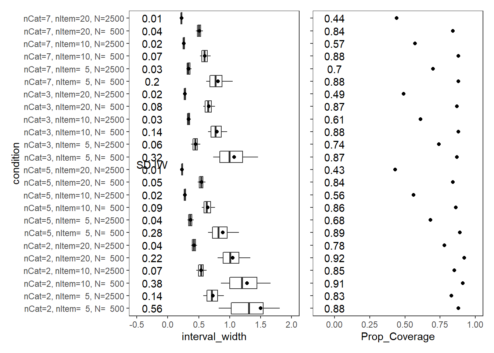
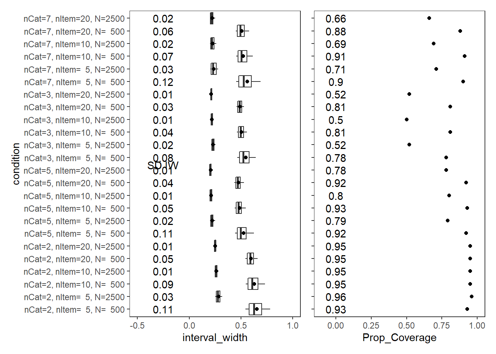
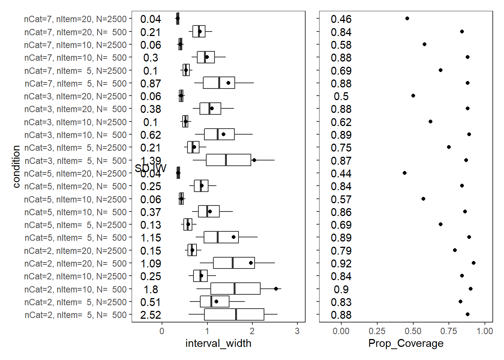
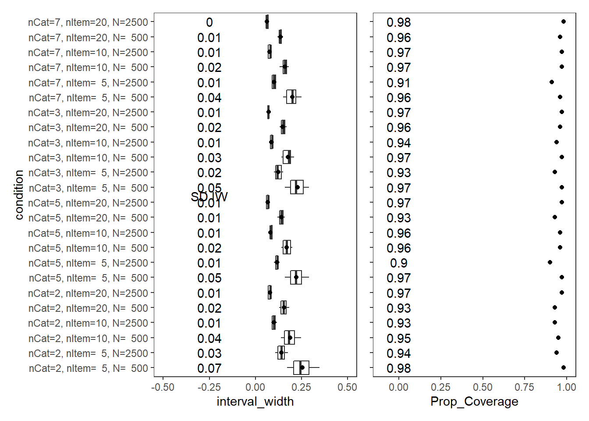
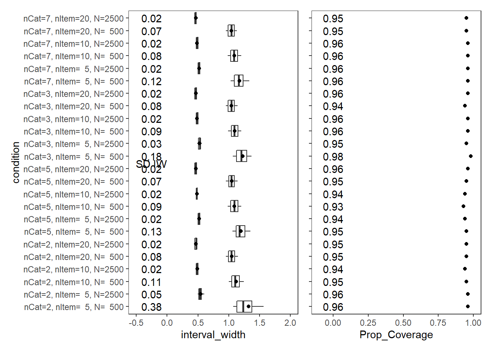
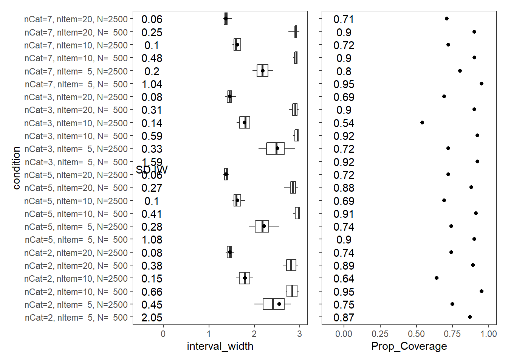
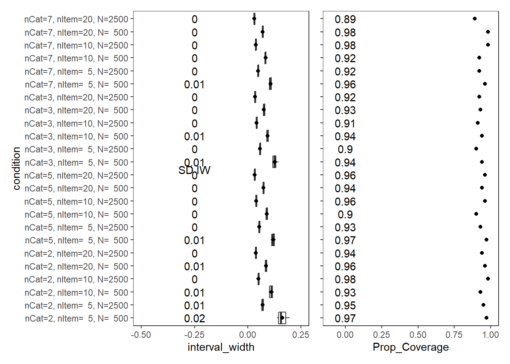
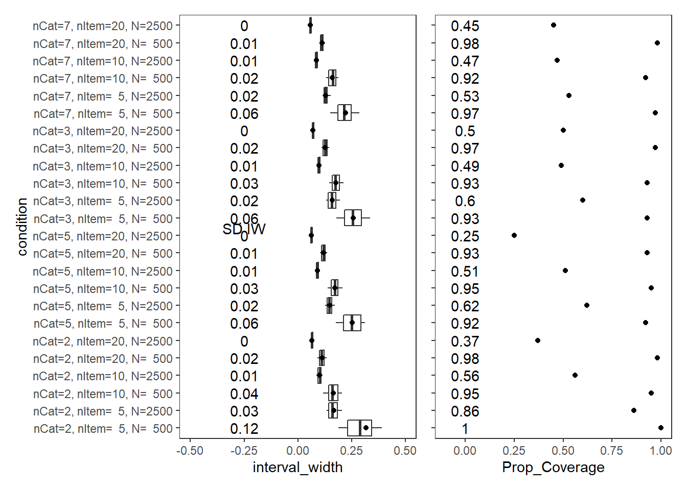
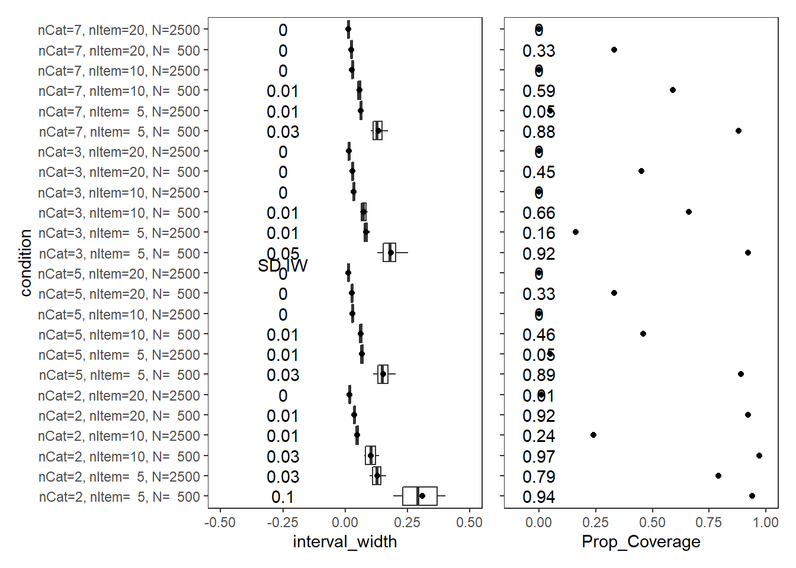
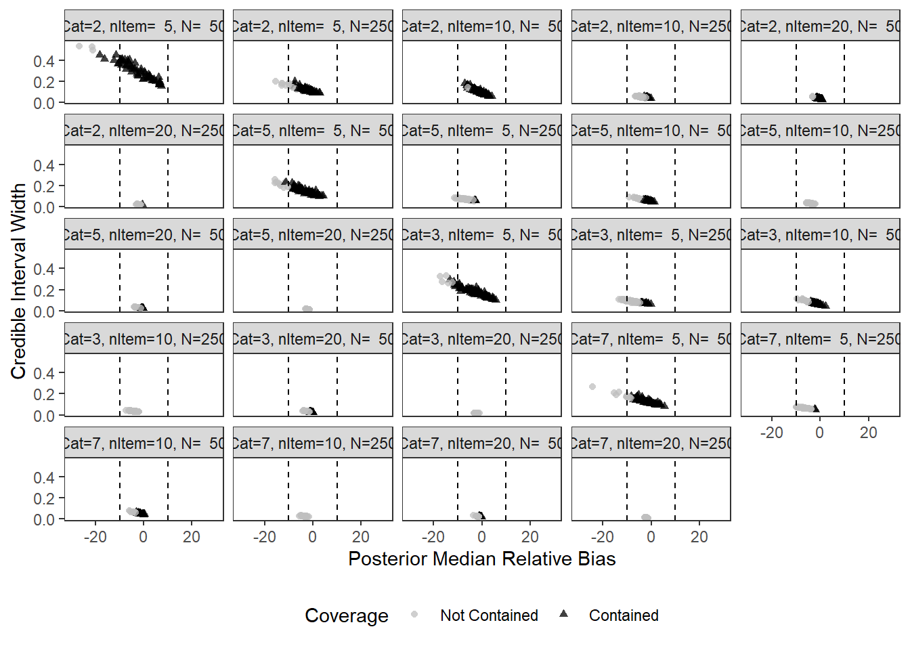

Last updated: 2022-02-15
Checks: 5 1
Knit directory: Padgett-Dissertation/
This reproducible R Markdown analysis was created with workflowr (version 1.6.2). The Checks tab describes the reproducibility checks that were applied when the results were created. The Past versions tab lists the development history.
Great job! The global environment was empty. Objects defined in the global environment can affect the analysis in your R Markdown file in unknown ways. For reproduciblity it’s best to always run the code in an empty environment.
The command set.seed(20210401) was run prior to running the code in the R Markdown file. Setting a seed ensures that any results that rely on randomness, e.g. subsampling or permutations, are reproducible.
Great job! Recording the operating system, R version, and package versions is critical for reproducibility.
Nice! There were no cached chunks for this analysis, so you can be confident that you successfully produced the results during this run.
Great job! Using relative paths to the files within your workflowr project makes it easier to run your code on other machines.
Tracking code development and connecting the code version to the results is critical for reproducibility. To start using Git, open the Terminal and type git init in your project directory.
This project is not being versioned with Git. To obtain the full reproducibility benefits of using workflowr, please see ?wflow_start.
# Load packages
source("code/load_packages.R")
source("code/load_utility_functions.R")
# environment options
options(scipen = 999, digits=3)
# results folder
res_folder <- paste0(w.d, "/data/study_2")
# read in data
source("code/load_extracted_data.R")The code below identifies whether the credible interval contains the “true” value for each parameter.
mydata <- mydata %>%
mutate(
covered = ifelse(true_value >= post_q025 & true_value <= post_q975, 1, 0),
interval_width = post_q975 - post_q025,
post_median_bias_est = post_q50 - true_value,
post_median_rb_est = (post_q50 - true_value)/true_value*100,
# compute convergence
converge = ifelse(Rhat - 1.10 < 0, 1, 0)
) %>%
filter(converge == 1)
# Update condition labels for plotting
mydata$condition <- factor(
mydata$condition,
levels = 1:24,
labels = c(
"nCat=2, nItem= 5, N= 500",
"nCat=2, nItem= 5, N=2500",
"nCat=2, nItem=10, N= 500",
"nCat=2, nItem=10, N=2500",
"nCat=2, nItem=20, N= 500",
"nCat=2, nItem=20, N=2500",
"nCat=5, nItem= 5, N= 500",
"nCat=5, nItem= 5, N=2500",
"nCat=5, nItem=10, N= 500",
"nCat=5, nItem=10, N=2500",
"nCat=5, nItem=20, N= 500",
"nCat=5, nItem=20, N=2500",
"nCat=3, nItem= 5, N= 500",
"nCat=3, nItem= 5, N=2500",
"nCat=3, nItem=10, N= 500",
"nCat=3, nItem=10, N=2500",
"nCat=3, nItem=20, N= 500",
"nCat=3, nItem=20, N=2500",
"nCat=7, nItem= 5, N= 500",
"nCat=7, nItem= 5, N=2500",
"nCat=7, nItem=10, N= 500",
"nCat=7, nItem=10, N=2500",
"nCat=7, nItem=20, N= 500",
"nCat=7, nItem=20, N=2500"
)
)
# columns to keep
keep_cols <- c("condition", "iter", "N", "N_items", "N_cat", "parameter_group", "covered", "interval_width")param = "FACTOR LOADING"
cov_dat <- mydata %>%
filter(parameter_group == "lambda")
# tabular summary of coverage
cov_tbl <- cov_dat %>%
group_by(condition, N_cat, N_items, N) %>%
summarise(Prop_Coverage = round(mean(covered),2),
Avg_Int_Width = mean(interval_width),
SD_Int_Width = round(sd(interval_width),2))`summarise()` has grouped output by 'condition', 'N_cat', 'N_items'. You can override using the `.groups` argument.kable(cov_tbl, format="html", digits=3) %>%
kable_styling(full_width = T) %>%
scroll_box(width="100%",height = "100%")| condition | N_cat | N_items | N | Prop_Coverage | Avg_Int_Width | SD_Int_Width |
|---|---|---|---|---|---|---|
| nCat=2, nItem= 5, N= 500 | 2 | 5 | 500 | 0.88 | 1.500 | 0.56 |
| nCat=2, nItem= 5, N=2500 | 2 | 5 | 2500 | 0.83 | 0.728 | 0.14 |
| nCat=2, nItem=10, N= 500 | 2 | 10 | 500 | 0.91 | 1.280 | 0.38 |
| nCat=2, nItem=10, N=2500 | 2 | 10 | 2500 | 0.85 | 0.540 | 0.07 |
| nCat=2, nItem=20, N= 500 | 2 | 20 | 500 | 0.92 | 1.046 | 0.22 |
| nCat=2, nItem=20, N=2500 | 2 | 20 | 2500 | 0.78 | 0.422 | 0.04 |
| nCat=5, nItem= 5, N= 500 | 5 | 5 | 500 | 0.89 | 0.887 | 0.28 |
| nCat=5, nItem= 5, N=2500 | 5 | 5 | 2500 | 0.68 | 0.365 | 0.04 |
| nCat=5, nItem=10, N= 500 | 5 | 10 | 500 | 0.86 | 0.646 | 0.09 |
| nCat=5, nItem=10, N=2500 | 5 | 10 | 2500 | 0.56 | 0.276 | 0.02 |
| nCat=5, nItem=20, N= 500 | 5 | 20 | 500 | 0.84 | 0.541 | 0.05 |
| nCat=5, nItem=20, N=2500 | 5 | 20 | 2500 | 0.43 | 0.230 | 0.01 |
| nCat=3, nItem= 5, N= 500 | 3 | 5 | 500 | 0.87 | 1.069 | 0.32 |
| nCat=3, nItem= 5, N=2500 | 3 | 5 | 2500 | 0.74 | 0.448 | 0.06 |
| nCat=3, nItem=10, N= 500 | 3 | 10 | 500 | 0.88 | 0.794 | 0.14 |
| nCat=3, nItem=10, N=2500 | 3 | 10 | 2500 | 0.61 | 0.335 | 0.03 |
| nCat=3, nItem=20, N= 500 | 3 | 20 | 500 | 0.87 | 0.660 | 0.08 |
| nCat=3, nItem=20, N=2500 | 3 | 20 | 2500 | 0.49 | 0.277 | 0.02 |
| nCat=7, nItem= 5, N= 500 | 7 | 5 | 500 | 0.88 | 0.813 | 0.20 |
| nCat=7, nItem= 5, N=2500 | 7 | 5 | 2500 | 0.70 | 0.338 | 0.03 |
| nCat=7, nItem=10, N= 500 | 7 | 10 | 500 | 0.88 | 0.597 | 0.07 |
| nCat=7, nItem=10, N=2500 | 7 | 10 | 2500 | 0.57 | 0.259 | 0.02 |
| nCat=7, nItem=20, N= 500 | 7 | 20 | 500 | 0.84 | 0.509 | 0.04 |
| nCat=7, nItem=20, N=2500 | 7 | 20 | 2500 | 0.44 | 0.220 | 0.01 |
# visualize values
p1<-ggplot() +
stat_summary(
data = cov_dat,
aes(y = condition, x = interval_width,
group = condition),
fun.data = cust.boxplot,
geom = "boxplot"
) +
geom_point(data = cov_tbl,
aes(y = condition, x = Avg_Int_Width),
color = "black") +
annotate("text", x=-0.25, y=cov_tbl$condition, label=cov_tbl$SD_Int_Width)+
annotate("text", x=-.25, y=12.4, label="SD IW")+
lims(x=c(-0.5, 2))+
theme_bw() +
theme(panel.grid = element_blank())
p2 <- ggplot() +
geom_point(data = cov_tbl,
aes(y = condition, x = Prop_Coverage),
color = "black") +
annotate("text", x=0, y=cov_tbl$condition, label=cov_tbl$Prop_Coverage)+
lims(x=c(-0.1,1))+
theme_bw() +
theme(panel.grid = element_blank(),
axis.title.y = element_blank(),
axis.text.y = element_blank())
p1 + p2Warning: Removed 121 rows containing non-finite values (stat_summary).
param = "Item Thresholds"
cov_dat <- mydata %>%
filter(parameter_group == "tau")
# tabular summary of coverage
cov_tbl <- cov_dat %>%
group_by(condition, N_cat, N_items, N) %>%
summarise(Prop_Coverage = round(mean(covered),2),
Avg_Int_Width = mean(interval_width),
SD_Int_Width = round(sd(interval_width),2))`summarise()` has grouped output by 'condition', 'N_cat', 'N_items'. You can override using the `.groups` argument.kable(cov_tbl, format="html", digits=3) %>%
kable_styling(full_width = T) %>%
scroll_box(width="100%",height = "100%")| condition | N_cat | N_items | N | Prop_Coverage | Avg_Int_Width | SD_Int_Width |
|---|---|---|---|---|---|---|
| nCat=2, nItem= 5, N= 500 | 2 | 5 | 500 | 0.93 | 0.653 | 0.11 |
| nCat=2, nItem= 5, N=2500 | 2 | 5 | 2500 | 0.96 | 0.281 | 0.03 |
| nCat=2, nItem=10, N= 500 | 2 | 10 | 500 | 0.95 | 0.629 | 0.09 |
| nCat=2, nItem=10, N=2500 | 2 | 10 | 2500 | 0.95 | 0.262 | 0.01 |
| nCat=2, nItem=20, N= 500 | 2 | 20 | 500 | 0.95 | 0.598 | 0.05 |
| nCat=2, nItem=20, N=2500 | 2 | 20 | 2500 | 0.95 | 0.250 | 0.01 |
| nCat=5, nItem= 5, N= 500 | 5 | 5 | 500 | 0.92 | 0.526 | 0.11 |
| nCat=5, nItem= 5, N=2500 | 5 | 5 | 2500 | 0.79 | 0.222 | 0.02 |
| nCat=5, nItem=10, N= 500 | 5 | 10 | 500 | 0.93 | 0.486 | 0.05 |
| nCat=5, nItem=10, N=2500 | 5 | 10 | 2500 | 0.80 | 0.212 | 0.01 |
| nCat=5, nItem=20, N= 500 | 5 | 20 | 500 | 0.92 | 0.477 | 0.04 |
| nCat=5, nItem=20, N=2500 | 5 | 20 | 2500 | 0.78 | 0.208 | 0.01 |
| nCat=3, nItem= 5, N= 500 | 3 | 5 | 500 | 0.78 | 0.545 | 0.08 |
| nCat=3, nItem= 5, N=2500 | 3 | 5 | 2500 | 0.52 | 0.231 | 0.02 |
| nCat=3, nItem=10, N= 500 | 3 | 10 | 500 | 0.81 | 0.503 | 0.04 |
| nCat=3, nItem=10, N=2500 | 3 | 10 | 2500 | 0.50 | 0.218 | 0.01 |
| nCat=3, nItem=20, N= 500 | 3 | 20 | 500 | 0.81 | 0.490 | 0.03 |
| nCat=3, nItem=20, N=2500 | 3 | 20 | 2500 | 0.52 | 0.213 | 0.01 |
| nCat=7, nItem= 5, N= 500 | 7 | 5 | 500 | 0.90 | 0.560 | 0.12 |
| nCat=7, nItem= 5, N=2500 | 7 | 5 | 2500 | 0.71 | 0.238 | 0.03 |
| nCat=7, nItem=10, N= 500 | 7 | 10 | 500 | 0.91 | 0.521 | 0.07 |
| nCat=7, nItem=10, N=2500 | 7 | 10 | 2500 | 0.69 | 0.226 | 0.02 |
| nCat=7, nItem=20, N= 500 | 7 | 20 | 500 | 0.88 | 0.506 | 0.06 |
| nCat=7, nItem=20, N=2500 | 7 | 20 | 2500 | 0.66 | 0.221 | 0.02 |
# visualize values
p1<-ggplot() +
stat_summary(
data = cov_dat,
aes(y = condition, x = interval_width,
group = condition),
fun.data = cust.boxplot,
geom = "boxplot"
) +
geom_point(data = cov_tbl,
aes(y = condition, x = Avg_Int_Width),
color = "black") +
annotate("text", x=-0.25, y=cov_tbl$condition, label=cov_tbl$SD_Int_Width)+
annotate("text", x=-.25, y=12.4, label="SD IW")+
lims(x=c(-0.5, 1))+
theme_bw() +
theme(panel.grid = element_blank())
p2 <- ggplot() +
geom_point(data = cov_tbl,
aes(y = condition, x = Prop_Coverage),
color = "black") +
annotate("text", x=0, y=cov_tbl$condition, label=cov_tbl$Prop_Coverage)+
lims(x=c(-0.1,1))+
theme_bw() +
theme(panel.grid = element_blank(),
axis.title.y = element_blank(),
axis.text.y = element_blank())
p1 + p2Warning: Removed 54 rows containing non-finite values (stat_summary).
param = "Latent Response Variance"
cov_dat <- mydata %>%
filter(parameter_group == "theta")
# tabular summary of coverage
cov_tbl <- cov_dat %>%
group_by(condition, N_cat, N_items, N) %>%
summarise(Prop_Coverage = round(mean(covered),2),
Avg_Int_Width = mean(interval_width),
SD_Int_Width = round(sd(interval_width),2))`summarise()` has grouped output by 'condition', 'N_cat', 'N_items'. You can override using the `.groups` argument.kable(cov_tbl, format="html", digits=3) %>%
kable_styling(full_width = T) %>%
scroll_box(width="100%",height = "100%")| condition | N_cat | N_items | N | Prop_Coverage | Avg_Int_Width | SD_Int_Width |
|---|---|---|---|---|---|---|
| nCat=2, nItem= 5, N= 500 | 2 | 5 | 500 | 0.88 | 3.009 | 2.52 |
| nCat=2, nItem= 5, N=2500 | 2 | 5 | 2500 | 0.83 | 1.200 | 0.51 |
| nCat=2, nItem=10, N= 500 | 2 | 10 | 500 | 0.90 | 2.526 | 1.80 |
| nCat=2, nItem=10, N=2500 | 2 | 10 | 2500 | 0.84 | 0.873 | 0.25 |
| nCat=2, nItem=20, N= 500 | 2 | 20 | 500 | 0.92 | 1.967 | 1.09 |
| nCat=2, nItem=20, N=2500 | 2 | 20 | 2500 | 0.79 | 0.673 | 0.15 |
| nCat=5, nItem= 5, N= 500 | 5 | 5 | 500 | 0.89 | 1.582 | 1.15 |
| nCat=5, nItem= 5, N=2500 | 5 | 5 | 2500 | 0.69 | 0.574 | 0.13 |
| nCat=5, nItem=10, N= 500 | 5 | 10 | 500 | 0.86 | 1.062 | 0.37 |
| nCat=5, nItem=10, N=2500 | 5 | 10 | 2500 | 0.57 | 0.428 | 0.06 |
| nCat=5, nItem=20, N= 500 | 5 | 20 | 500 | 0.84 | 0.882 | 0.25 |
| nCat=5, nItem=20, N=2500 | 5 | 20 | 2500 | 0.44 | 0.357 | 0.04 |
| nCat=3, nItem= 5, N= 500 | 3 | 5 | 500 | 0.87 | 2.040 | 1.39 |
| nCat=3, nItem= 5, N=2500 | 3 | 5 | 2500 | 0.75 | 0.710 | 0.21 |
| nCat=3, nItem=10, N= 500 | 3 | 10 | 500 | 0.89 | 1.363 | 0.62 |
| nCat=3, nItem=10, N=2500 | 3 | 10 | 2500 | 0.62 | 0.518 | 0.10 |
| nCat=3, nItem=20, N= 500 | 3 | 20 | 500 | 0.88 | 1.101 | 0.38 |
| nCat=3, nItem=20, N=2500 | 3 | 20 | 2500 | 0.50 | 0.424 | 0.06 |
| nCat=7, nItem= 5, N= 500 | 7 | 5 | 500 | 0.88 | 1.467 | 0.87 |
| nCat=7, nItem= 5, N=2500 | 7 | 5 | 2500 | 0.69 | 0.532 | 0.10 |
| nCat=7, nItem=10, N= 500 | 7 | 10 | 500 | 0.88 | 0.991 | 0.30 |
| nCat=7, nItem=10, N=2500 | 7 | 10 | 2500 | 0.58 | 0.405 | 0.06 |
| nCat=7, nItem=20, N= 500 | 7 | 20 | 500 | 0.84 | 0.832 | 0.21 |
| nCat=7, nItem=20, N=2500 | 7 | 20 | 2500 | 0.46 | 0.345 | 0.04 |
# visualize values
p1<-ggplot() +
stat_summary(
data = cov_dat,
aes(y = condition, x = interval_width,
group = condition),
fun.data = cust.boxplot,
geom = "boxplot"
) +
geom_point(data = cov_tbl,
aes(y = condition, x = Avg_Int_Width),
color = "black") +
annotate("text", x=-0.25, y=cov_tbl$condition, label=cov_tbl$SD_Int_Width)+
annotate("text", x=-.25, y=12.4, label="SD IW")+
lims(x=c(-0.5, 3))+
theme_bw() +
theme(panel.grid = element_blank())
p2 <- ggplot() +
geom_point(data = cov_tbl,
aes(y = condition, x = Prop_Coverage),
color = "black") +
annotate("text", x=0, y=cov_tbl$condition, label=cov_tbl$Prop_Coverage)+
lims(x=c(-0.1,1))+
theme_bw() +
theme(panel.grid = element_blank(),
axis.title.y = element_blank(),
axis.text.y = element_blank())
p1 + p2Warning: Removed 730 rows containing non-finite values (stat_summary).Warning: Removed 1 rows containing missing values (geom_point).
param = "RT Intercepts"
cov_dat <- mydata %>%
filter(parameter_group == "beta_lrt")
# tabular summary of coverage
cov_tbl <- cov_dat %>%
group_by(condition, N_cat, N_items, N) %>%
summarise(Prop_Coverage = round(mean(covered),2),
Avg_Int_Width = mean(interval_width),
SD_Int_Width = round(sd(interval_width),2))`summarise()` has grouped output by 'condition', 'N_cat', 'N_items'. You can override using the `.groups` argument.kable(cov_tbl, format="html", digits=3) %>%
kable_styling(full_width = T) %>%
scroll_box(width="100%",height = "100%")| condition | N_cat | N_items | N | Prop_Coverage | Avg_Int_Width | SD_Int_Width |
|---|---|---|---|---|---|---|
| nCat=2, nItem= 5, N= 500 | 2 | 5 | 500 | 0.98 | 0.254 | 0.07 |
| nCat=2, nItem= 5, N=2500 | 2 | 5 | 2500 | 0.94 | 0.142 | 0.03 |
| nCat=2, nItem=10, N= 500 | 2 | 10 | 500 | 0.95 | 0.188 | 0.04 |
| nCat=2, nItem=10, N=2500 | 2 | 10 | 2500 | 0.93 | 0.100 | 0.01 |
| nCat=2, nItem=20, N= 500 | 2 | 20 | 500 | 0.93 | 0.154 | 0.02 |
| nCat=2, nItem=20, N=2500 | 2 | 20 | 2500 | 0.97 | 0.078 | 0.01 |
| nCat=5, nItem= 5, N= 500 | 5 | 5 | 500 | 0.97 | 0.222 | 0.05 |
| nCat=5, nItem= 5, N=2500 | 5 | 5 | 2500 | 0.90 | 0.116 | 0.01 |
| nCat=5, nItem=10, N= 500 | 5 | 10 | 500 | 0.96 | 0.170 | 0.02 |
| nCat=5, nItem=10, N=2500 | 5 | 10 | 2500 | 0.96 | 0.082 | 0.01 |
| nCat=5, nItem=20, N= 500 | 5 | 20 | 500 | 0.93 | 0.140 | 0.01 |
| nCat=5, nItem=20, N=2500 | 5 | 20 | 2500 | 0.97 | 0.066 | 0.01 |
| nCat=3, nItem= 5, N= 500 | 3 | 5 | 500 | 0.97 | 0.228 | 0.05 |
| nCat=3, nItem= 5, N=2500 | 3 | 5 | 2500 | 0.93 | 0.123 | 0.02 |
| nCat=3, nItem=10, N= 500 | 3 | 10 | 500 | 0.97 | 0.177 | 0.03 |
| nCat=3, nItem=10, N=2500 | 3 | 10 | 2500 | 0.94 | 0.087 | 0.01 |
| nCat=3, nItem=20, N= 500 | 3 | 20 | 500 | 0.96 | 0.147 | 0.02 |
| nCat=3, nItem=20, N=2500 | 3 | 20 | 2500 | 0.97 | 0.071 | 0.01 |
| nCat=7, nItem= 5, N= 500 | 7 | 5 | 500 | 0.96 | 0.200 | 0.04 |
| nCat=7, nItem= 5, N=2500 | 7 | 5 | 2500 | 0.91 | 0.101 | 0.01 |
| nCat=7, nItem=10, N= 500 | 7 | 10 | 500 | 0.97 | 0.159 | 0.02 |
| nCat=7, nItem=10, N=2500 | 7 | 10 | 2500 | 0.97 | 0.076 | 0.01 |
| nCat=7, nItem=20, N= 500 | 7 | 20 | 500 | 0.96 | 0.135 | 0.01 |
| nCat=7, nItem=20, N=2500 | 7 | 20 | 2500 | 0.98 | 0.063 | 0.00 |
# visualize values
p1<-ggplot() +
stat_summary(
data = cov_dat,
aes(y = condition, x = interval_width,
group = condition),
fun.data = cust.boxplot,
geom = "boxplot"
) +
geom_point(data = cov_tbl,
aes(y = condition, x = Avg_Int_Width),
color = "black") +
annotate("text", x=-0.25, y=cov_tbl$condition, label=cov_tbl$SD_Int_Width)+
annotate("text", x=-.25, y=12.4, label="SD IW")+
lims(x=c(-0.5, 0.5))+
theme_bw() +
theme(panel.grid = element_blank())
p2 <- ggplot() +
geom_point(data = cov_tbl,
aes(y = condition, x = Prop_Coverage),
color = "black") +
annotate("text", x=0, y=cov_tbl$condition, label=cov_tbl$Prop_Coverage)+
lims(x=c(-0.1,1))+
theme_bw() +
theme(panel.grid = element_blank(),
axis.title.y = element_blank(),
axis.text.y = element_blank())
p1 + p2Warning: Removed 2 rows containing non-finite values (stat_summary).
param = "RT Precision"
cov_dat <- mydata %>%
filter(parameter_group == "sigma_lrt")
# tabular summary of coverage
cov_tbl <- cov_dat %>%
group_by(condition, N_cat, N_items, N) %>%
summarise(Prop_Coverage = round(mean(covered),2),
Avg_Int_Width = mean(interval_width),
SD_Int_Width = round(sd(interval_width),2))`summarise()` has grouped output by 'condition', 'N_cat', 'N_items'. You can override using the `.groups` argument.kable(cov_tbl, format="html", digits=3) %>%
kable_styling(full_width = T) %>%
scroll_box(width="100%",height = "100%")| condition | N_cat | N_items | N | Prop_Coverage | Avg_Int_Width | SD_Int_Width |
|---|---|---|---|---|---|---|
| nCat=2, nItem= 5, N= 500 | 2 | 5 | 500 | 0.96 | 1.323 | 0.38 |
| nCat=2, nItem= 5, N=2500 | 2 | 5 | 2500 | 0.96 | 0.542 | 0.05 |
| nCat=2, nItem=10, N= 500 | 2 | 10 | 500 | 0.95 | 1.117 | 0.11 |
| nCat=2, nItem=10, N=2500 | 2 | 10 | 2500 | 0.94 | 0.488 | 0.02 |
| nCat=2, nItem=20, N= 500 | 2 | 20 | 500 | 0.95 | 1.048 | 0.08 |
| nCat=2, nItem=20, N=2500 | 2 | 20 | 2500 | 0.95 | 0.466 | 0.02 |
| nCat=5, nItem= 5, N= 500 | 5 | 5 | 500 | 0.95 | 1.196 | 0.13 |
| nCat=5, nItem= 5, N=2500 | 5 | 5 | 2500 | 0.94 | 0.519 | 0.02 |
| nCat=5, nItem=10, N= 500 | 5 | 10 | 500 | 0.93 | 1.090 | 0.09 |
| nCat=5, nItem=10, N=2500 | 5 | 10 | 2500 | 0.94 | 0.483 | 0.02 |
| nCat=5, nItem=20, N= 500 | 5 | 20 | 500 | 0.95 | 1.045 | 0.07 |
| nCat=5, nItem=20, N=2500 | 5 | 20 | 2500 | 0.96 | 0.464 | 0.02 |
| nCat=3, nItem= 5, N= 500 | 3 | 5 | 500 | 0.98 | 1.226 | 0.18 |
| nCat=3, nItem= 5, N=2500 | 3 | 5 | 2500 | 0.95 | 0.528 | 0.03 |
| nCat=3, nItem=10, N= 500 | 3 | 10 | 500 | 0.96 | 1.095 | 0.09 |
| nCat=3, nItem=10, N=2500 | 3 | 10 | 2500 | 0.96 | 0.485 | 0.02 |
| nCat=3, nItem=20, N= 500 | 3 | 20 | 500 | 0.94 | 1.043 | 0.08 |
| nCat=3, nItem=20, N=2500 | 3 | 20 | 2500 | 0.96 | 0.465 | 0.02 |
| nCat=7, nItem= 5, N= 500 | 7 | 5 | 500 | 0.96 | 1.172 | 0.12 |
| nCat=7, nItem= 5, N=2500 | 7 | 5 | 2500 | 0.96 | 0.517 | 0.02 |
| nCat=7, nItem=10, N= 500 | 7 | 10 | 500 | 0.96 | 1.087 | 0.08 |
| nCat=7, nItem=10, N=2500 | 7 | 10 | 2500 | 0.96 | 0.483 | 0.02 |
| nCat=7, nItem=20, N= 500 | 7 | 20 | 500 | 0.95 | 1.041 | 0.07 |
| nCat=7, nItem=20, N=2500 | 7 | 20 | 2500 | 0.95 | 0.464 | 0.02 |
# visualize values
p1<-ggplot() +
stat_summary(
data = cov_dat,
aes(y = condition, x = interval_width,
group = condition),
fun.data = cust.boxplot,
geom = "boxplot"
) +
geom_point(data = cov_tbl,
aes(y = condition, x = Avg_Int_Width),
color = "black") +
annotate("text", x=-0.25, y=cov_tbl$condition, label=cov_tbl$SD_Int_Width)+
annotate("text", x=-.25, y=12.4, label="SD IW")+
lims(x=c(-0.5, 2))+
theme_bw() +
theme(panel.grid = element_blank())
p2 <- ggplot() +
geom_point(data = cov_tbl,
aes(y = condition, x = Prop_Coverage),
color = "black") +
annotate("text", x=0, y=cov_tbl$condition, label=cov_tbl$Prop_Coverage)+
lims(x=c(-0.1,1))+
theme_bw() +
theme(panel.grid = element_blank(),
axis.title.y = element_blank(),
axis.text.y = element_blank())
p1 + p2Warning: Removed 20 rows containing non-finite values (stat_summary).
param = "Speed LV Precision"
cov_dat <- mydata %>%
filter(parameter_group == "sigma_s")
# tabular summary of coverage
cov_tbl <- cov_dat %>%
group_by(condition, N_cat, N_items, N) %>%
summarise(Prop_Coverage = round(mean(covered),2),
Avg_Int_Width = mean(interval_width),
SD_Int_Width = round(sd(interval_width),2))`summarise()` has grouped output by 'condition', 'N_cat', 'N_items'. You can override using the `.groups` argument.kable(cov_tbl, format="html", digits=3) %>%
kable_styling(full_width = T) %>%
scroll_box(width="100%",height = "100%")| condition | N_cat | N_items | N | Prop_Coverage | Avg_Int_Width | SD_Int_Width |
|---|---|---|---|---|---|---|
| nCat=2, nItem= 5, N= 500 | 2 | 5 | 500 | 0.87 | 6.41 | 2.05 |
| nCat=2, nItem= 5, N=2500 | 2 | 5 | 2500 | 0.75 | 2.54 | 0.45 |
| nCat=2, nItem=10, N= 500 | 2 | 10 | 500 | 0.95 | 3.90 | 0.66 |
| nCat=2, nItem=10, N=2500 | 2 | 10 | 2500 | 0.64 | 1.79 | 0.15 |
| nCat=2, nItem=20, N= 500 | 2 | 20 | 500 | 0.89 | 3.18 | 0.38 |
| nCat=2, nItem=20, N=2500 | 2 | 20 | 2500 | 0.74 | 1.46 | 0.08 |
| nCat=5, nItem= 5, N= 500 | 5 | 5 | 500 | 0.90 | 5.09 | 1.08 |
| nCat=5, nItem= 5, N=2500 | 5 | 5 | 2500 | 0.74 | 2.22 | 0.28 |
| nCat=5, nItem=10, N= 500 | 5 | 10 | 500 | 0.91 | 3.66 | 0.41 |
| nCat=5, nItem=10, N=2500 | 5 | 10 | 2500 | 0.69 | 1.63 | 0.10 |
| nCat=5, nItem=20, N= 500 | 5 | 20 | 500 | 0.88 | 3.10 | 0.27 |
| nCat=5, nItem=20, N=2500 | 5 | 20 | 2500 | 0.72 | 1.38 | 0.06 |
| nCat=3, nItem= 5, N= 500 | 3 | 5 | 500 | 0.92 | 5.50 | 1.59 |
| nCat=3, nItem= 5, N=2500 | 3 | 5 | 2500 | 0.72 | 2.51 | 0.33 |
| nCat=3, nItem=10, N= 500 | 3 | 10 | 500 | 0.92 | 3.88 | 0.59 |
| nCat=3, nItem=10, N=2500 | 3 | 10 | 2500 | 0.54 | 1.78 | 0.14 |
| nCat=3, nItem=20, N= 500 | 3 | 20 | 500 | 0.90 | 3.23 | 0.31 |
| nCat=3, nItem=20, N=2500 | 3 | 20 | 2500 | 0.69 | 1.46 | 0.08 |
| nCat=7, nItem= 5, N= 500 | 7 | 5 | 500 | 0.95 | 4.98 | 1.04 |
| nCat=7, nItem= 5, N=2500 | 7 | 5 | 2500 | 0.80 | 2.19 | 0.20 |
| nCat=7, nItem=10, N= 500 | 7 | 10 | 500 | 0.90 | 3.59 | 0.48 |
| nCat=7, nItem=10, N=2500 | 7 | 10 | 2500 | 0.72 | 1.62 | 0.10 |
| nCat=7, nItem=20, N= 500 | 7 | 20 | 500 | 0.90 | 3.14 | 0.25 |
| nCat=7, nItem=20, N=2500 | 7 | 20 | 2500 | 0.71 | 1.38 | 0.06 |
# visualize values
p1<-ggplot() +
stat_summary(
data = cov_dat,
aes(y = condition, x = interval_width,
group = condition),
fun.data = cust.boxplot,
geom = "boxplot"
) +
geom_point(data = cov_tbl,
aes(y = condition, x = Avg_Int_Width),
color = "black") +
annotate("text", x=-0.25, y=cov_tbl$condition, label=cov_tbl$SD_Int_Width)+
annotate("text", x=-.25, y=12.4, label="SD IW")+
lims(x=c(-0.5, 3))+
theme_bw() +
theme(panel.grid = element_blank())
p2 <- ggplot() +
geom_point(data = cov_tbl,
aes(y = condition, x = Prop_Coverage),
color = "black") +
annotate("text", x=0, y=cov_tbl$condition, label=cov_tbl$Prop_Coverage)+
lims(x=c(-0.1,1))+
theme_bw() +
theme(panel.grid = element_blank(),
axis.title.y = element_blank(),
axis.text.y = element_blank())
p1 + p2Warning: Removed 990 rows containing non-finite values (stat_summary).Warning: Removed 12 rows containing missing values (geom_point).
param = "Latent Covariance"
cov_dat <- mydata %>%
filter(parameter_group == "sigma_st")
# tabular summary of coverage
cov_tbl <- cov_dat %>%
group_by(condition, N_cat, N_items, N) %>%
summarise(Prop_Coverage = round(mean(covered),2),
Avg_Int_Width = mean(interval_width),
SD_Int_Width = round(sd(interval_width),2))`summarise()` has grouped output by 'condition', 'N_cat', 'N_items'. You can override using the `.groups` argument.kable(cov_tbl, format="html", digits=3) %>%
kable_styling(full_width = T) %>%
scroll_box(width="100%",height = "100%")| condition | N_cat | N_items | N | Prop_Coverage | Avg_Int_Width | SD_Int_Width |
|---|---|---|---|---|---|---|
| nCat=2, nItem= 5, N= 500 | 2 | 5 | 500 | 0.97 | 0.162 | 0.02 |
| nCat=2, nItem= 5, N=2500 | 2 | 5 | 2500 | 0.95 | 0.070 | 0.01 |
| nCat=2, nItem=10, N= 500 | 2 | 10 | 500 | 0.93 | 0.110 | 0.01 |
| nCat=2, nItem=10, N=2500 | 2 | 10 | 2500 | 0.98 | 0.050 | 0.00 |
| nCat=2, nItem=20, N= 500 | 2 | 20 | 500 | 0.96 | 0.085 | 0.01 |
| nCat=2, nItem=20, N=2500 | 2 | 20 | 2500 | 0.94 | 0.038 | 0.00 |
| nCat=5, nItem= 5, N= 500 | 5 | 5 | 500 | 0.97 | 0.119 | 0.01 |
| nCat=5, nItem= 5, N=2500 | 5 | 5 | 2500 | 0.93 | 0.054 | 0.00 |
| nCat=5, nItem=10, N= 500 | 5 | 10 | 500 | 0.90 | 0.088 | 0.00 |
| nCat=5, nItem=10, N=2500 | 5 | 10 | 2500 | 0.96 | 0.040 | 0.00 |
| nCat=5, nItem=20, N= 500 | 5 | 20 | 500 | 0.94 | 0.073 | 0.00 |
| nCat=5, nItem=20, N=2500 | 5 | 20 | 2500 | 0.96 | 0.033 | 0.00 |
| nCat=3, nItem= 5, N= 500 | 3 | 5 | 500 | 0.94 | 0.126 | 0.01 |
| nCat=3, nItem= 5, N=2500 | 3 | 5 | 2500 | 0.90 | 0.058 | 0.00 |
| nCat=3, nItem=10, N= 500 | 3 | 10 | 500 | 0.94 | 0.092 | 0.01 |
| nCat=3, nItem=10, N=2500 | 3 | 10 | 2500 | 0.91 | 0.041 | 0.00 |
| nCat=3, nItem=20, N= 500 | 3 | 20 | 500 | 0.93 | 0.075 | 0.00 |
| nCat=3, nItem=20, N=2500 | 3 | 20 | 2500 | 0.92 | 0.034 | 0.00 |
| nCat=7, nItem= 5, N= 500 | 7 | 5 | 500 | 0.96 | 0.106 | 0.01 |
| nCat=7, nItem= 5, N=2500 | 7 | 5 | 2500 | 0.92 | 0.048 | 0.00 |
| nCat=7, nItem=10, N= 500 | 7 | 10 | 500 | 0.92 | 0.083 | 0.00 |
| nCat=7, nItem=10, N=2500 | 7 | 10 | 2500 | 0.98 | 0.037 | 0.00 |
| nCat=7, nItem=20, N= 500 | 7 | 20 | 500 | 0.98 | 0.069 | 0.00 |
| nCat=7, nItem=20, N=2500 | 7 | 20 | 2500 | 0.89 | 0.031 | 0.00 |
# visualize values
p1<-ggplot() +
stat_summary(
data = cov_dat,
aes(y = condition, x = interval_width,
group = condition),
fun.data = cust.boxplot,
geom = "boxplot"
) +
geom_point(data = cov_tbl,
aes(y = condition, x = Avg_Int_Width),
color = "black") +
annotate("text", x=-0.25, y=cov_tbl$condition, label=cov_tbl$SD_Int_Width)+
annotate("text", x=-.25, y=12.4, label="SD IW")+
lims(x=c(-0.5, 0.25))+
theme_bw() +
theme(panel.grid = element_blank())
p2 <- ggplot() +
geom_point(data = cov_tbl,
aes(y = condition, x = Prop_Coverage),
color = "black") +
annotate("text", x=0, y=cov_tbl$condition, label=cov_tbl$Prop_Coverage)+
lims(x=c(-0.1,1))+
theme_bw() +
theme(panel.grid = element_blank(),
axis.title.y = element_blank(),
axis.text.y = element_blank())
p1 + p2
param = "PID Relationship"
cov_dat <- mydata %>%
filter(parameter_group == "rho")
# tabular summary of coverage
cov_tbl <- cov_dat %>%
group_by(condition, N_cat, N_items, N) %>%
summarise(Prop_Coverage = round(mean(covered),2),
Avg_Int_Width = mean(interval_width),
SD_Int_Width = round(sd(interval_width),2))`summarise()` has grouped output by 'condition', 'N_cat', 'N_items'. You can override using the `.groups` argument.kable(cov_tbl, format="html", digits=3) %>%
kable_styling(full_width = T) %>%
scroll_box(width="100%",height = "100%")| condition | N_cat | N_items | N | Prop_Coverage | Avg_Int_Width | SD_Int_Width |
|---|---|---|---|---|---|---|
| nCat=2, nItem= 5, N= 500 | 2 | 5 | 500 | 1.00 | 0.316 | 0.12 |
| nCat=2, nItem= 5, N=2500 | 2 | 5 | 2500 | 0.86 | 0.166 | 0.03 |
| nCat=2, nItem=10, N= 500 | 2 | 10 | 500 | 0.95 | 0.163 | 0.04 |
| nCat=2, nItem=10, N=2500 | 2 | 10 | 2500 | 0.56 | 0.100 | 0.01 |
| nCat=2, nItem=20, N= 500 | 2 | 20 | 500 | 0.98 | 0.111 | 0.02 |
| nCat=2, nItem=20, N=2500 | 2 | 20 | 2500 | 0.37 | 0.065 | 0.00 |
| nCat=5, nItem= 5, N= 500 | 5 | 5 | 500 | 0.92 | 0.251 | 0.06 |
| nCat=5, nItem= 5, N=2500 | 5 | 5 | 2500 | 0.62 | 0.147 | 0.02 |
| nCat=5, nItem=10, N= 500 | 5 | 10 | 500 | 0.95 | 0.172 | 0.03 |
| nCat=5, nItem=10, N=2500 | 5 | 10 | 2500 | 0.51 | 0.092 | 0.01 |
| nCat=5, nItem=20, N= 500 | 5 | 20 | 500 | 0.93 | 0.118 | 0.01 |
| nCat=5, nItem=20, N=2500 | 5 | 20 | 2500 | 0.25 | 0.061 | 0.00 |
| nCat=3, nItem= 5, N= 500 | 3 | 5 | 500 | 0.93 | 0.258 | 0.06 |
| nCat=3, nItem= 5, N=2500 | 3 | 5 | 2500 | 0.60 | 0.160 | 0.02 |
| nCat=3, nItem=10, N= 500 | 3 | 10 | 500 | 0.93 | 0.177 | 0.03 |
| nCat=3, nItem=10, N=2500 | 3 | 10 | 2500 | 0.49 | 0.098 | 0.01 |
| nCat=3, nItem=20, N= 500 | 3 | 20 | 500 | 0.97 | 0.127 | 0.02 |
| nCat=3, nItem=20, N=2500 | 3 | 20 | 2500 | 0.50 | 0.069 | 0.00 |
| nCat=7, nItem= 5, N= 500 | 7 | 5 | 500 | 0.97 | 0.222 | 0.06 |
| nCat=7, nItem= 5, N=2500 | 7 | 5 | 2500 | 0.53 | 0.129 | 0.02 |
| nCat=7, nItem=10, N= 500 | 7 | 10 | 500 | 0.92 | 0.159 | 0.02 |
| nCat=7, nItem=10, N=2500 | 7 | 10 | 2500 | 0.47 | 0.085 | 0.01 |
| nCat=7, nItem=20, N= 500 | 7 | 20 | 500 | 0.98 | 0.113 | 0.01 |
| nCat=7, nItem=20, N=2500 | 7 | 20 | 2500 | 0.45 | 0.058 | 0.00 |
# visualize values
p1<-ggplot() +
stat_summary(
data = cov_dat,
aes(y = condition, x = interval_width,
group = condition),
fun.data = cust.boxplot,
geom = "boxplot"
) +
geom_point(data = cov_tbl,
aes(y = condition, x = Avg_Int_Width),
color = "black") +
annotate("text", x=-0.25, y=cov_tbl$condition, label=cov_tbl$SD_Int_Width)+
annotate("text", x=-.25, y=12.4, label="SD IW")+
lims(x=c(-0.5, 0.5))+
theme_bw() +
theme(panel.grid = element_blank())
p2 <- ggplot() +
geom_point(data = cov_tbl,
aes(y = condition, x = Prop_Coverage),
color = "black") +
annotate("text", x=0, y=cov_tbl$condition, label=cov_tbl$Prop_Coverage)+
lims(x=c(-0.1,1))+
theme_bw() +
theme(panel.grid = element_blank(),
axis.title.y = element_blank(),
axis.text.y = element_blank())
p1 + p2Warning: Removed 6 rows containing non-finite values (stat_summary).
param = "RELIABILITY"
cov_dat <- mydata %>%
filter(parameter_group == "omega")
# tabular summary of coverage
cov_tbl <- cov_dat %>%
group_by(condition, N_cat, N_items, N) %>%
summarise(Prop_Coverage = round(mean(covered),2),
Avg_Int_Width = mean(interval_width),
SD_Int_Width = round(sd(interval_width),2))`summarise()` has grouped output by 'condition', 'N_cat', 'N_items'. You can override using the `.groups` argument.kable(cov_tbl, format="html", digits=3) %>%
kable_styling(full_width = T) %>%
scroll_box(width="100%",height = "100%")| condition | N_cat | N_items | N | Prop_Coverage | Avg_Int_Width | SD_Int_Width |
|---|---|---|---|---|---|---|
| nCat=2, nItem= 5, N= 500 | 2 | 5 | 500 | 0.94 | 0.310 | 0.10 |
| nCat=2, nItem= 5, N=2500 | 2 | 5 | 2500 | 0.79 | 0.128 | 0.03 |
| nCat=2, nItem=10, N= 500 | 2 | 10 | 500 | 0.97 | 0.103 | 0.03 |
| nCat=2, nItem=10, N=2500 | 2 | 10 | 2500 | 0.24 | 0.048 | 0.01 |
| nCat=2, nItem=20, N= 500 | 2 | 20 | 500 | 0.92 | 0.037 | 0.01 |
| nCat=2, nItem=20, N=2500 | 2 | 20 | 2500 | 0.01 | 0.018 | 0.00 |
| nCat=5, nItem= 5, N= 500 | 5 | 5 | 500 | 0.89 | 0.153 | 0.03 |
| nCat=5, nItem= 5, N=2500 | 5 | 5 | 2500 | 0.05 | 0.066 | 0.01 |
| nCat=5, nItem=10, N= 500 | 5 | 10 | 500 | 0.46 | 0.062 | 0.01 |
| nCat=5, nItem=10, N=2500 | 5 | 10 | 2500 | 0.00 | 0.028 | 0.00 |
| nCat=5, nItem=20, N= 500 | 5 | 20 | 500 | 0.33 | 0.026 | 0.00 |
| nCat=5, nItem=20, N=2500 | 5 | 20 | 2500 | 0.00 | 0.012 | 0.00 |
| nCat=3, nItem= 5, N= 500 | 3 | 5 | 500 | 0.92 | 0.184 | 0.05 |
| nCat=3, nItem= 5, N=2500 | 3 | 5 | 2500 | 0.16 | 0.083 | 0.01 |
| nCat=3, nItem=10, N= 500 | 3 | 10 | 500 | 0.66 | 0.074 | 0.01 |
| nCat=3, nItem=10, N=2500 | 3 | 10 | 2500 | 0.00 | 0.034 | 0.00 |
| nCat=3, nItem=20, N= 500 | 3 | 20 | 500 | 0.45 | 0.029 | 0.00 |
| nCat=3, nItem=20, N=2500 | 3 | 20 | 2500 | 0.00 | 0.014 | 0.00 |
| nCat=7, nItem= 5, N= 500 | 7 | 5 | 500 | 0.88 | 0.134 | 0.03 |
| nCat=7, nItem= 5, N=2500 | 7 | 5 | 2500 | 0.05 | 0.063 | 0.01 |
| nCat=7, nItem=10, N= 500 | 7 | 10 | 500 | 0.59 | 0.057 | 0.01 |
| nCat=7, nItem=10, N=2500 | 7 | 10 | 2500 | 0.00 | 0.028 | 0.00 |
| nCat=7, nItem=20, N= 500 | 7 | 20 | 500 | 0.33 | 0.025 | 0.00 |
| nCat=7, nItem=20, N=2500 | 7 | 20 | 2500 | 0.00 | 0.012 | 0.00 |
# visualize values
p1<-ggplot() +
stat_summary(
data = cov_dat,
aes(y = condition, x = interval_width,
group = condition),
fun.data = cust.boxplot,
geom = "boxplot"
) +
geom_point(data = cov_tbl,
aes(y = condition, x = Avg_Int_Width),
color = "black") +
annotate("text", x=-0.25, y=cov_tbl$condition, label=cov_tbl$SD_Int_Width)+
annotate("text", x=-.25, y=12.4, label="SD IW")+
lims(x=c(-0.5, 0.5))+
theme_bw() +
theme(panel.grid = element_blank())
p2 <- ggplot() +
geom_point(data = cov_tbl,
aes(y = condition, x = Prop_Coverage),
color = "black") +
annotate("text", x=0, y=cov_tbl$condition, label=cov_tbl$Prop_Coverage)+
lims(x=c(-0.1,1))+
theme_bw() +
theme(panel.grid = element_blank(),
axis.title.y = element_blank(),
axis.text.y = element_blank())
p1 + p2Warning: Removed 3 rows containing non-finite values (stat_summary).
sum_tab <- mydata %>%
filter(
!is.na(parameter_group)
, parameter_group != "lambda (STD)"
) %>%
group_by(condition, N_cat, N_items, N, parameter_group) %>%
summarise(
Prop_Coverage = round(mean(covered)*100,0)
)`summarise()` has grouped output by 'condition', 'N_cat', 'N_items', 'N'. You can override using the `.groups` argument.# part 1: 2 category data
T1 <- sum_tab %>%
filter(N_cat == 2) %>%
pivot_wider(
id_cols = c("parameter_group", "N")
, names_from = "N_items"
, values_from = "Prop_Coverage"
) %>%
arrange(.,parameter_group)
# reordering of rows to more logical for presentation
T1 <- T1[c(3:4, 15:18, 1:2, 5:8, 13:14, 11:12, 9:10) ,]
# part 2: 5 category data
T2 <- sum_tab %>%
filter(N_cat == 5) %>%
pivot_wider(
id_cols = c("parameter_group", "N")
, names_from = "N_items"
, values_from = "Prop_Coverage"
) %>%
arrange(.,parameter_group)
# reordering of rows to more logical for presentation
T2 <- T2[c(3:4, 15:18, 1:2, 5:8, 13:14, 11:12, 9:10) ,]
Tb12 <- cbind(T1, T2[,3:5])New names:
* `5` -> `5...3`
* `10` -> `10...4`
* `20` -> `20...5`
* `5` -> `5...6`
* `10` -> `10...7`
* ...colnames(Tb12) <- c(
"Parameter", "N", paste0(c(5,10,20), "_c2"),
paste0(c(5,10,20), "_c5")
)
print(
xtable(
Tb12
, caption = c("Credible interval coverage rate")
,align = "llrrrrrrr",digits = 0
),
include.rownames=F,
booktabs=T
)% latex table generated in R 4.0.5 by xtable 1.8-4 package
% Tue Feb 15 12:18:43 2022
\begin{table}[ht]
\centering
\begin{tabular}{lrrrrrrr}
\toprule
Parameter & N & 5\_c2 & 10\_c2 & 20\_c2 & 5\_c5 & 10\_c5 & 20\_c5 \\
\midrule
lambda & 500 & 88 & 91 & 92 & 89 & 86 & 84 \\
lambda & 2500 & 83 & 85 & 78 & 68 & 56 & 43 \\
tau & 500 & 93 & 95 & 95 & 92 & 93 & 92 \\
tau & 2500 & 96 & 95 & 95 & 79 & 80 & 78 \\
theta & 500 & 88 & 90 & 92 & 89 & 86 & 84 \\
theta & 2500 & 83 & 84 & 79 & 69 & 57 & 44 \\
beta\_lrt & 500 & 98 & 95 & 93 & 97 & 96 & 93 \\
beta\_lrt & 2500 & 94 & 93 & 97 & 90 & 96 & 97 \\
sigma\_lrt & 500 & 96 & 95 & 95 & 95 & 93 & 95 \\
sigma\_lrt & 2500 & 96 & 94 & 95 & 94 & 94 & 96 \\
sigma\_s & 500 & 87 & 95 & 89 & 90 & 91 & 88 \\
sigma\_s & 2500 & 75 & 64 & 74 & 74 & 69 & 72 \\
sigma\_st & 500 & 97 & 93 & 96 & 97 & 90 & 94 \\
sigma\_st & 2500 & 95 & 98 & 94 & 93 & 96 & 96 \\
rho & 500 & 100 & 95 & 98 & 92 & 95 & 93 \\
rho & 2500 & 86 & 56 & 37 & 62 & 51 & 25 \\
omega & 500 & 94 & 97 & 92 & 89 & 46 & 33 \\
omega & 2500 & 79 & 24 & 1 & 5 & 0 & 0 \\
\bottomrule
\end{tabular}
\caption{Credible interval coverage rate}
\end{table}# part 3: 3 category data
T3 <- sum_tab %>%
filter(N_cat == 3) %>%
pivot_wider(
id_cols = c("parameter_group", "N")
, names_from = "N_items"
, values_from = "Prop_Coverage"
) %>%
arrange(.,parameter_group)
# reordering of rows to more logical for presentation
T3 <- T3[c(3:4, 15:18, 1:2, 5:8, 13:14, 11:12, 9:10) ,]
# part 4: 2 category data
T4 <- sum_tab %>%
filter(N_cat == 7) %>%
pivot_wider(
id_cols = c("parameter_group", "N")
, names_from = "N_items"
, values_from = "Prop_Coverage"
) %>%
arrange(.,parameter_group)
# reordering of rows to more logical for presentation
T4 <- T4[c(3:4, 15:18, 1:2, 5:8, 13:14, 11:12, 9:10) ,]
Tb34 <- cbind(T3, T4[,3:5])New names:
* `5` -> `5...3`
* `10` -> `10...4`
* `20` -> `20...5`
* `5` -> `5...6`
* `10` -> `10...7`
* ...colnames(Tb34) <- c(
"Parameter", "N", paste0(c(5,10,20), "_c3"),
paste0(c(5,10,20), "_c7")
)
print(
xtable(
Tb34
, caption = c("Credible interval coverage rate: 3 and 7 cat")
,align = "llrrrrrrr",digits = 0
),
include.rownames=F,
booktabs=T
)% latex table generated in R 4.0.5 by xtable 1.8-4 package
% Tue Feb 15 12:18:43 2022
\begin{table}[ht]
\centering
\begin{tabular}{lrrrrrrr}
\toprule
Parameter & N & 5\_c3 & 10\_c3 & 20\_c3 & 5\_c7 & 10\_c7 & 20\_c7 \\
\midrule
lambda & 500 & 87 & 88 & 87 & 88 & 88 & 84 \\
lambda & 2500 & 74 & 61 & 49 & 70 & 57 & 44 \\
tau & 500 & 78 & 81 & 81 & 90 & 91 & 88 \\
tau & 2500 & 52 & 50 & 52 & 71 & 69 & 66 \\
theta & 500 & 87 & 89 & 88 & 88 & 88 & 84 \\
theta & 2500 & 75 & 62 & 50 & 69 & 58 & 46 \\
beta\_lrt & 500 & 97 & 97 & 96 & 96 & 97 & 96 \\
beta\_lrt & 2500 & 93 & 94 & 97 & 91 & 97 & 98 \\
sigma\_lrt & 500 & 98 & 96 & 94 & 96 & 96 & 95 \\
sigma\_lrt & 2500 & 95 & 96 & 96 & 96 & 96 & 95 \\
sigma\_s & 500 & 92 & 92 & 90 & 95 & 90 & 90 \\
sigma\_s & 2500 & 72 & 54 & 69 & 80 & 72 & 71 \\
sigma\_st & 500 & 94 & 94 & 93 & 96 & 92 & 98 \\
sigma\_st & 2500 & 90 & 91 & 92 & 92 & 98 & 89 \\
rho & 500 & 93 & 93 & 97 & 97 & 92 & 98 \\
rho & 2500 & 60 & 49 & 50 & 53 & 47 & 45 \\
omega & 500 & 92 & 66 & 45 & 88 & 59 & 33 \\
omega & 2500 & 16 & 0 & 0 & 5 & 0 & 0 \\
\bottomrule
\end{tabular}
\caption{Credible interval coverage rate: 3 and 7 cat}
\end{table}# full combined
Tb1234 <- cbind(Tb12, Tb34[,3:8])
print(
xtable(
Tb1234
, caption = c("Credible interval coverage rate all combined")
,align = "llrrrrrrrrrrrrr",digits = 0
),
include.rownames=F,
booktabs=T
)% latex table generated in R 4.0.5 by xtable 1.8-4 package
% Tue Feb 15 12:18:43 2022
\begin{table}[ht]
\centering
\begin{tabular}{lrrrrrrrrrrrrr}
\toprule
Parameter & N & 5\_c2 & 10\_c2 & 20\_c2 & 5\_c5 & 10\_c5 & 20\_c5 & 5\_c3 & 10\_c3 & 20\_c3 & 5\_c7 & 10\_c7 & 20\_c7 \\
\midrule
lambda & 500 & 88 & 91 & 92 & 89 & 86 & 84 & 87 & 88 & 87 & 88 & 88 & 84 \\
lambda & 2500 & 83 & 85 & 78 & 68 & 56 & 43 & 74 & 61 & 49 & 70 & 57 & 44 \\
tau & 500 & 93 & 95 & 95 & 92 & 93 & 92 & 78 & 81 & 81 & 90 & 91 & 88 \\
tau & 2500 & 96 & 95 & 95 & 79 & 80 & 78 & 52 & 50 & 52 & 71 & 69 & 66 \\
theta & 500 & 88 & 90 & 92 & 89 & 86 & 84 & 87 & 89 & 88 & 88 & 88 & 84 \\
theta & 2500 & 83 & 84 & 79 & 69 & 57 & 44 & 75 & 62 & 50 & 69 & 58 & 46 \\
beta\_lrt & 500 & 98 & 95 & 93 & 97 & 96 & 93 & 97 & 97 & 96 & 96 & 97 & 96 \\
beta\_lrt & 2500 & 94 & 93 & 97 & 90 & 96 & 97 & 93 & 94 & 97 & 91 & 97 & 98 \\
sigma\_lrt & 500 & 96 & 95 & 95 & 95 & 93 & 95 & 98 & 96 & 94 & 96 & 96 & 95 \\
sigma\_lrt & 2500 & 96 & 94 & 95 & 94 & 94 & 96 & 95 & 96 & 96 & 96 & 96 & 95 \\
sigma\_s & 500 & 87 & 95 & 89 & 90 & 91 & 88 & 92 & 92 & 90 & 95 & 90 & 90 \\
sigma\_s & 2500 & 75 & 64 & 74 & 74 & 69 & 72 & 72 & 54 & 69 & 80 & 72 & 71 \\
sigma\_st & 500 & 97 & 93 & 96 & 97 & 90 & 94 & 94 & 94 & 93 & 96 & 92 & 98 \\
sigma\_st & 2500 & 95 & 98 & 94 & 93 & 96 & 96 & 90 & 91 & 92 & 92 & 98 & 89 \\
rho & 500 & 100 & 95 & 98 & 92 & 95 & 93 & 93 & 93 & 97 & 97 & 92 & 98 \\
rho & 2500 & 86 & 56 & 37 & 62 & 51 & 25 & 60 & 49 & 50 & 53 & 47 & 45 \\
omega & 500 & 94 & 97 & 92 & 89 & 46 & 33 & 92 & 66 & 45 & 88 & 59 & 33 \\
omega & 2500 & 79 & 24 & 1 & 5 & 0 & 0 & 16 & 0 & 0 & 5 & 0 & 0 \\
\bottomrule
\end{tabular}
\caption{Credible interval coverage rate all combined}
\end{table}sum_tab <- mydata %>%
filter(
!is.na(parameter_group)
, parameter_group != "lambda (STD)"
) %>%
group_by(condition, N_cat, N_items, N, parameter_group) %>%
summarise(
avg_width = mean(interval_width),
sd_width = round(sd(interval_width),2)
)`summarise()` has grouped output by 'condition', 'N_cat', 'N_items', 'N'. You can override using the `.groups` argument.# part 1: 2 category data
T1 <- sum_tab %>%
filter(N_cat == 2) %>%
pivot_wider(
id_cols = c("parameter_group", "N")
, names_from = "N_items"
, values_from = all_of(c("avg_width", "sd_width"))
) %>%
arrange(.,parameter_group)
# reordering of rows to more logical for presentation
T1 <- T1[c(3:4, 15:18, 1:2, 5:8, 13:14, 11:12, 9:10) ,]
# part 2: 5 category data
T2 <- sum_tab %>%
filter(N_cat == 5) %>%
pivot_wider(
id_cols = c("parameter_group", "N")
, names_from = "N_items"
, values_from = all_of(c("avg_width", "sd_width"))
) %>%
arrange(.,parameter_group)
# reordering of rows to more logical for presentation
T2 <- T2[c(3:4, 15:18, 1:2, 5:8, 13:14, 11:12, 9:10) ,]
Tb12 <- cbind(T1[,1:5], T2[,3:5], T1[,6:8], T2[,6:8])New names:
* avg_width_5 -> avg_width_5...3
* avg_width_10 -> avg_width_10...4
* avg_width_20 -> avg_width_20...5
* avg_width_5 -> avg_width_5...6
* avg_width_10 -> avg_width_10...7
* ...colnames(Tb12) <- c(
"Parameter", "N", paste0(c(5,10,20), "_c2"),
paste0(c(5,10,20), "_c5"), paste0(c(5,10,20), "_c2"),
paste0(c(5,10,20), "_c5")
)
print(
xtable(
Tb12
, caption = c("Credible interval widths and SD")
,align = "lllrrrrrrrrrrrr"
),
include.rownames=F,
booktabs=T
)% latex table generated in R 4.0.5 by xtable 1.8-4 package
% Tue Feb 15 12:18:43 2022
\begin{table}[ht]
\centering
\begin{tabular}{llrrrrrrrrrrrr}
\toprule
Parameter & N & 5\_c2 & 10\_c2 & 20\_c2 & 5\_c5 & 10\_c5 & 20\_c5 & 5\_c2 & 10\_c2 & 20\_c2 & 5\_c5 & 10\_c5 & 20\_c5 \\
\midrule
lambda & 500 & 1.50 & 1.28 & 1.05 & 0.89 & 0.65 & 0.54 & 0.56 & 0.38 & 0.22 & 0.28 & 0.09 & 0.05 \\
lambda & 2500 & 0.73 & 0.54 & 0.42 & 0.36 & 0.28 & 0.23 & 0.14 & 0.07 & 0.04 & 0.04 & 0.02 & 0.01 \\
tau & 500 & 0.65 & 0.63 & 0.60 & 0.53 & 0.49 & 0.48 & 0.11 & 0.09 & 0.05 & 0.11 & 0.05 & 0.04 \\
tau & 2500 & 0.28 & 0.26 & 0.25 & 0.22 & 0.21 & 0.21 & 0.03 & 0.01 & 0.01 & 0.02 & 0.01 & 0.01 \\
theta & 500 & 3.01 & 2.53 & 1.97 & 1.58 & 1.06 & 0.88 & 2.52 & 1.80 & 1.09 & 1.15 & 0.37 & 0.25 \\
theta & 2500 & 1.20 & 0.87 & 0.67 & 0.57 & 0.43 & 0.36 & 0.51 & 0.25 & 0.15 & 0.13 & 0.06 & 0.04 \\
beta\_lrt & 500 & 0.25 & 0.19 & 0.15 & 0.22 & 0.17 & 0.14 & 0.07 & 0.04 & 0.02 & 0.05 & 0.02 & 0.01 \\
beta\_lrt & 2500 & 0.14 & 0.10 & 0.08 & 0.12 & 0.08 & 0.07 & 0.03 & 0.01 & 0.01 & 0.01 & 0.01 & 0.01 \\
sigma\_lrt & 500 & 1.32 & 1.12 & 1.05 & 1.20 & 1.09 & 1.04 & 0.38 & 0.11 & 0.08 & 0.13 & 0.09 & 0.07 \\
sigma\_lrt & 2500 & 0.54 & 0.49 & 0.47 & 0.52 & 0.48 & 0.46 & 0.05 & 0.02 & 0.02 & 0.02 & 0.02 & 0.02 \\
sigma\_s & 500 & 6.41 & 3.90 & 3.18 & 5.09 & 3.66 & 3.10 & 2.05 & 0.66 & 0.38 & 1.08 & 0.41 & 0.27 \\
sigma\_s & 2500 & 2.54 & 1.79 & 1.46 & 2.22 & 1.63 & 1.38 & 0.45 & 0.15 & 0.08 & 0.28 & 0.10 & 0.06 \\
sigma\_st & 500 & 0.16 & 0.11 & 0.09 & 0.12 & 0.09 & 0.07 & 0.02 & 0.01 & 0.01 & 0.01 & 0.00 & 0.00 \\
sigma\_st & 2500 & 0.07 & 0.05 & 0.04 & 0.05 & 0.04 & 0.03 & 0.01 & 0.00 & 0.00 & 0.00 & 0.00 & 0.00 \\
rho & 500 & 0.32 & 0.16 & 0.11 & 0.25 & 0.17 & 0.12 & 0.12 & 0.04 & 0.02 & 0.06 & 0.03 & 0.01 \\
rho & 2500 & 0.17 & 0.10 & 0.07 & 0.15 & 0.09 & 0.06 & 0.03 & 0.01 & 0.00 & 0.02 & 0.01 & 0.00 \\
omega & 500 & 0.31 & 0.10 & 0.04 & 0.15 & 0.06 & 0.03 & 0.10 & 0.03 & 0.01 & 0.03 & 0.01 & 0.00 \\
omega & 2500 & 0.13 & 0.05 & 0.02 & 0.07 & 0.03 & 0.01 & 0.03 & 0.01 & 0.00 & 0.01 & 0.00 & 0.00 \\
\bottomrule
\end{tabular}
\caption{Credible interval widths and SD}
\end{table}# part 3: 3 category data
T3 <- sum_tab %>%
filter(N_cat == 3) %>%
pivot_wider(
id_cols = c("parameter_group", "N")
, names_from = "N_items"
, values_from = all_of(c("avg_width", "sd_width"))
) %>%
arrange(.,parameter_group)
# reordering of rows to more logical for presentation
T3 <- T3[c(3:4, 15:18, 1:2, 5:8, 13:14, 11:12, 9:10) ,]
# part 4: 2 category data
T4 <- sum_tab %>%
filter(N_cat == 7) %>%
pivot_wider(
id_cols = c("parameter_group", "N")
, names_from = "N_items"
, values_from = all_of(c("avg_width", "sd_width"))
) %>%
arrange(.,parameter_group)
# reordering of rows to more logical for presentation
T4 <- T4[c(3:4, 15:18, 1:2, 5:8, 13:14, 11:12, 9:10) ,]
Tb34 <- cbind(T3[,1:5], T4[,3:5], T3[,6:8], T4[,6:8])New names:
* avg_width_5 -> avg_width_5...3
* avg_width_10 -> avg_width_10...4
* avg_width_20 -> avg_width_20...5
* avg_width_5 -> avg_width_5...6
* avg_width_10 -> avg_width_10...7
* ...colnames(Tb12) <- c(
"Parameter", "N", paste0(c(5,10,20), "_c3"),
paste0(c(5,10,20), "_c7"), paste0(c(5,10,20), "_c3"),
paste0(c(5,10,20), "_c7")
)
print(
xtable(
Tb34
, caption = c("Credible interval widths and SD")
,align = "lllrrrrrrrrrrrr"
),
include.rownames=F,
booktabs=T
)% latex table generated in R 4.0.5 by xtable 1.8-4 package
% Tue Feb 15 12:18:43 2022
\begin{table}[ht]
\centering
\begin{tabular}{llrrrrrrrrrrrr}
\toprule
parameter\_group & N & avg\_width\_5...3 & avg\_width\_10...4 & avg\_width\_20...5 & avg\_width\_5...6 & avg\_width\_10...7 & avg\_width\_20...8 & sd\_width\_5...9 & sd\_width\_10...10 & sd\_width\_20...11 & sd\_width\_5...12 & sd\_width\_10...13 & sd\_width\_20...14 \\
\midrule
lambda & 500 & 1.07 & 0.79 & 0.66 & 0.81 & 0.60 & 0.51 & 0.32 & 0.14 & 0.08 & 0.20 & 0.07 & 0.04 \\
lambda & 2500 & 0.45 & 0.34 & 0.28 & 0.34 & 0.26 & 0.22 & 0.06 & 0.03 & 0.02 & 0.03 & 0.02 & 0.01 \\
tau & 500 & 0.54 & 0.50 & 0.49 & 0.56 & 0.52 & 0.51 & 0.08 & 0.04 & 0.03 & 0.12 & 0.07 & 0.06 \\
tau & 2500 & 0.23 & 0.22 & 0.21 & 0.24 & 0.23 & 0.22 & 0.02 & 0.01 & 0.01 & 0.03 & 0.02 & 0.02 \\
theta & 500 & 2.04 & 1.36 & 1.10 & 1.47 & 0.99 & 0.83 & 1.39 & 0.62 & 0.38 & 0.87 & 0.30 & 0.21 \\
theta & 2500 & 0.71 & 0.52 & 0.42 & 0.53 & 0.41 & 0.34 & 0.21 & 0.10 & 0.06 & 0.10 & 0.06 & 0.04 \\
beta\_lrt & 500 & 0.23 & 0.18 & 0.15 & 0.20 & 0.16 & 0.13 & 0.05 & 0.03 & 0.02 & 0.04 & 0.02 & 0.01 \\
beta\_lrt & 2500 & 0.12 & 0.09 & 0.07 & 0.10 & 0.08 & 0.06 & 0.02 & 0.01 & 0.01 & 0.01 & 0.01 & 0.00 \\
sigma\_lrt & 500 & 1.23 & 1.10 & 1.04 & 1.17 & 1.09 & 1.04 & 0.18 & 0.09 & 0.08 & 0.12 & 0.08 & 0.07 \\
sigma\_lrt & 2500 & 0.53 & 0.49 & 0.46 & 0.52 & 0.48 & 0.46 & 0.03 & 0.02 & 0.02 & 0.02 & 0.02 & 0.02 \\
sigma\_s & 500 & 5.50 & 3.88 & 3.23 & 4.98 & 3.59 & 3.15 & 1.59 & 0.59 & 0.31 & 1.04 & 0.48 & 0.25 \\
sigma\_s & 2500 & 2.51 & 1.78 & 1.46 & 2.19 & 1.62 & 1.38 & 0.33 & 0.14 & 0.08 & 0.20 & 0.10 & 0.06 \\
sigma\_st & 500 & 0.13 & 0.09 & 0.08 & 0.11 & 0.08 & 0.07 & 0.01 & 0.01 & 0.00 & 0.01 & 0.00 & 0.00 \\
sigma\_st & 2500 & 0.06 & 0.04 & 0.03 & 0.05 & 0.04 & 0.03 & 0.00 & 0.00 & 0.00 & 0.00 & 0.00 & 0.00 \\
rho & 500 & 0.26 & 0.18 & 0.13 & 0.22 & 0.16 & 0.11 & 0.06 & 0.03 & 0.02 & 0.06 & 0.02 & 0.01 \\
rho & 2500 & 0.16 & 0.10 & 0.07 & 0.13 & 0.09 & 0.06 & 0.02 & 0.01 & 0.00 & 0.02 & 0.01 & 0.00 \\
omega & 500 & 0.18 & 0.07 & 0.03 & 0.13 & 0.06 & 0.02 & 0.05 & 0.01 & 0.00 & 0.03 & 0.01 & 0.00 \\
omega & 2500 & 0.08 & 0.03 & 0.01 & 0.06 & 0.03 & 0.01 & 0.01 & 0.00 & 0.00 & 0.01 & 0.00 & 0.00 \\
\bottomrule
\end{tabular}
\caption{Credible interval widths and SD}
\end{table}cov_dat <- mydata %>%
filter(parameter_group == "omega")
cov_tbl <- cov_dat %>%
group_by(condition, N_cat, N_items, N) %>%
summarise(Prop_Coverage = round(mean(covered),2),
Avg_Int_Width = mean(interval_width),
SD_Int_Width = round(sd(interval_width),2))`summarise()` has grouped output by 'condition', 'N_cat', 'N_items'. You can override using the `.groups` argument.cols <- c("Not Contained"="gray75", "Contained"="black")
p <- cov_dat %>%
group_by(condition) %>%
mutate(std_int_width=scale(interval_width,center = FALSE))%>%
ungroup()%>%
mutate(
Coverage=factor(covered, levels=c(0,1), labels=c("Not Contained", "Contained"))
) %>%
ggplot(aes(x=post_median_rb_est, y=interval_width, shape=Coverage, color=Coverage))+
geom_point(alpha=0.75)+
geom_vline(xintercept = -10,
linetype = "dashed") +
geom_vline(xintercept = 10,
linetype = "dashed") +
lims(x=c(-30,30))+
labs(x="Posterior Median Relative Bias", y="Credible Interval Width")+
scale_color_manual(values=cols)+
facet_wrap(.~condition) +
theme_bw() +
theme(
panel.grid = element_blank(),
legend.position = "bottom"
)
pWarning: Removed 1 rows containing missing values (geom_point).
ggsave(filename = "fig/study2_coverage_omega.pdf",plot=p,width = 7, height=4.25,units="in")Warning: Removed 1 rows containing missing values (geom_point).ggsave(filename = "fig/study2_coverage_omega.png",plot=p,width = 7, height=4.25,units="in")Warning: Removed 1 rows containing missing values (geom_point).ggsave(filename = "fig/study2_coverage_omega.eps",plot=p,width = 7, height=4.25,units="in")Warning: Removed 1 rows containing missing values (geom_point).Warning in grid.Call.graphics(C_points, x$x, x$y, x$pch, x$size): semi-
transparency is not supported on this device: reported only once per page
sessionInfo()R version 4.0.5 (2021-03-31)
Platform: x86_64-w64-mingw32/x64 (64-bit)
Running under: Windows 10 x64 (build 22000)
Matrix products: default
locale:
[1] LC_COLLATE=English_United States.1252
[2] LC_CTYPE=English_United States.1252
[3] LC_MONETARY=English_United States.1252
[4] LC_NUMERIC=C
[5] LC_TIME=English_United States.1252
attached base packages:
[1] stats graphics grDevices utils datasets methods base
other attached packages:
[1] car_3.0-10 carData_3.0-4 mvtnorm_1.1-1
[4] LaplacesDemon_16.1.4 runjags_2.2.0-2 lme4_1.1-26
[7] Matrix_1.3-2 sirt_3.9-4 R2jags_0.6-1
[10] rjags_4-12 eRm_1.0-2 diffIRT_1.5
[13] statmod_1.4.35 xtable_1.8-4 kableExtra_1.3.4
[16] lavaan_0.6-7 polycor_0.7-10 bayesplot_1.8.0
[19] ggmcmc_1.5.1.1 coda_0.19-4 data.table_1.14.0
[22] patchwork_1.1.1 forcats_0.5.1 stringr_1.4.0
[25] dplyr_1.0.5 purrr_0.3.4 readr_1.4.0
[28] tidyr_1.1.3 tibble_3.1.0 ggplot2_3.3.5
[31] tidyverse_1.3.0 workflowr_1.6.2
loaded via a namespace (and not attached):
[1] minqa_1.2.4 TAM_3.5-19 colorspace_2.0-0 rio_0.5.26
[5] ellipsis_0.3.1 ggridges_0.5.3 rprojroot_2.0.2 fs_1.5.0
[9] rstudioapi_0.13 farver_2.1.0 fansi_0.4.2 lubridate_1.7.10
[13] xml2_1.3.2 splines_4.0.5 mnormt_2.0.2 knitr_1.31
[17] jsonlite_1.7.2 nloptr_1.2.2.2 broom_0.7.5 dbplyr_2.1.0
[21] compiler_4.0.5 httr_1.4.2 backports_1.2.1 assertthat_0.2.1
[25] cli_2.3.1 later_1.1.0.1 htmltools_0.5.1.1 tools_4.0.5
[29] gtable_0.3.0 glue_1.4.2 Rcpp_1.0.7 cellranger_1.1.0
[33] jquerylib_0.1.3 vctrs_0.3.6 svglite_2.0.0 nlme_3.1-152
[37] psych_2.0.12 xfun_0.21 ps_1.6.0 openxlsx_4.2.3
[41] rvest_1.0.0 lifecycle_1.0.0 MASS_7.3-53.1 scales_1.1.1
[45] ragg_1.1.1 hms_1.0.0 promises_1.2.0.1 parallel_4.0.5
[49] RColorBrewer_1.1-2 curl_4.3 yaml_2.2.1 sass_0.3.1
[53] reshape_0.8.8 stringi_1.5.3 highr_0.8 zip_2.1.1
[57] boot_1.3-27 rlang_0.4.10 pkgconfig_2.0.3 systemfonts_1.0.1
[61] evaluate_0.14 lattice_0.20-41 labeling_0.4.2 tidyselect_1.1.0
[65] GGally_2.1.1 plyr_1.8.6 magrittr_2.0.1 R6_2.5.0
[69] generics_0.1.0 DBI_1.1.1 foreign_0.8-81 pillar_1.5.1
[73] haven_2.3.1 withr_2.4.1 abind_1.4-5 modelr_0.1.8
[77] crayon_1.4.1 utf8_1.1.4 tmvnsim_1.0-2 rmarkdown_2.7
[81] grid_4.0.5 readxl_1.3.1 CDM_7.5-15 pbivnorm_0.6.0
[85] git2r_0.28.0 reprex_1.0.0 digest_0.6.27 webshot_0.5.2
[89] httpuv_1.5.5 textshaping_0.3.1 stats4_4.0.5 munsell_0.5.0
[93] viridisLite_0.3.0 bslib_0.2.4 R2WinBUGS_2.1-21